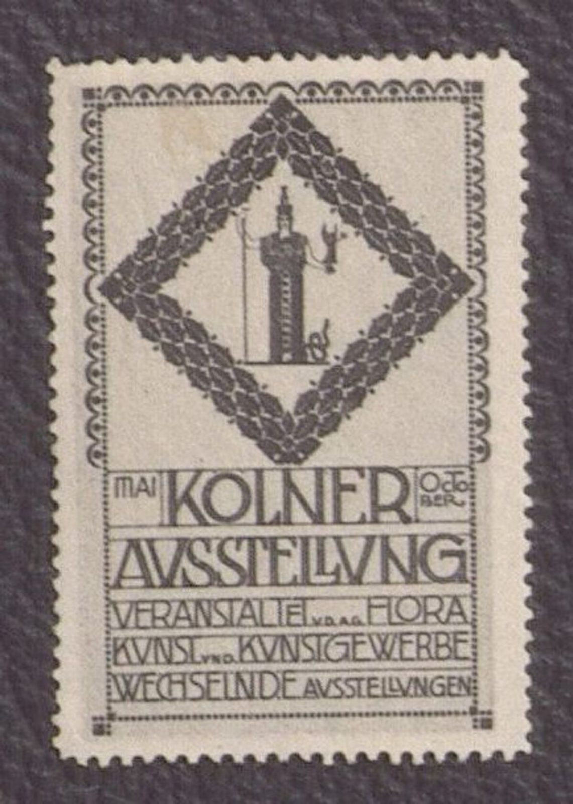

References / Other / 308
Poster stamp for the Cologne exhibition, 1907
Joseph Maria Olbrich’s advertising stamp puts a tower in a diamond of laurel, and fits the exhibition text into ruled bands of squared capitals.
- Source
- MAK Collection Online: Werbemarke zur Kölner Ausstellung 1907, KI 21484-3-311
- Creator
- Joseph Maria Olbrich
- Made
- 1907
- Style
- Vienna Secession (agent-proposed, not yet reviewed by a person)
- Moods
- Geometric, precise, refined
- Evidence
- Downloaded and inspected the MAK photograph of the stamp MAK KI 21484-3-311 (1198 × 1680 px). The photograph is soft and shows JPEG blocking, so fine details of the laurel and the tower figure are uncertain.
- Reviewed
- Rights
- Open license, stored. License: public domain. Rights policy
Context
The MAK records the object as a poster stamp (Werbemarke) designed by Joseph Maria Olbrich in 1907, printed in collotype, 4.5 × 3.1 cm. The text reads “Mai / Kölner / October / Ausstellung / veranstaltet v. d. A. G. Flora / Kunst und Kunstgewerbe / wechselnde Ausstellungen”. It is part of an album of poster stamps from the Werner J. Schweiger collection. MAK KI 21484-3-311.
Olbrich (1867–1908) was one of the founders of the Vienna Secession. Wikipedia: Joseph Maria Olbrich. He completed the Secession building in 1898. Wikipedia: Secession Building.
Observed
- The stamp is printed in one dark gray ink on pale paper, with perforated edges.
- A border of small scallops and dots frames the upper field.
- A diamond (a square set on its point) made of dense laurel leaves holds a tall tower with a figure on top, on the central axis.
- Below, the text sits in five ruled bands. “KÖLNER” and “AUSSTELLUNG” are large; smaller capitals in the lower bands fill each band from edge to edge.
- “MAI” and “OCTOBER” sit in small boxes at the two ends of the “KÖLNER” band. The small words “v. d. A. G.” and “und” are set at a smaller size between larger words.
- The capitals are narrow and geometric; the U is drawn as a V.
Why it belongs
Olbrich uses the same devices as the Vienna posters: a frame, a central emblem, and text blocks in which letter size and width change so that every line is full. The laurel echoes the laurel dome of his Secession building.
Because it is a single-colour miniature, the stamp shows how much of the style is carried by structure and lettering alone.
Borrow
Give a small badge or card a central emblem in a square set on its point, with the text in full-width ruled bands below it.
Set small connecting words (and, of, from) in a much smaller size between large words, so the line stays justified.
Measured
Machine-extracted by tools/image-traits.py on . Full measurement.
- Mean chroma
- 0.07
- Palette
- #cfc2b4 31%
- #4f464b 26%
- #6b615d 13%
- #bfb4a7 8%
- #867c75 6%
- #91877f 6%
- #a69c93 5%
- #ded1c3 3%

